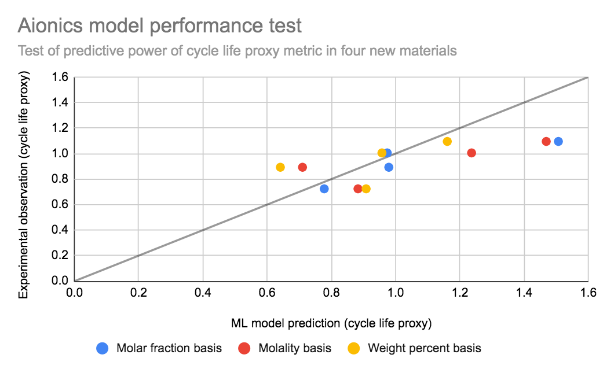

<section id="case-study">
    <div class="container">
        <h1>Case Studies</h1>
        <div class="content">
            <div class="case-study">
                <div data-aos="fade-up-right" data-aos-offset="100" data-aos-delay="200" data-aos-duration="2000" data-aos-easing="ease-in-out" data-aos-mirror="true" data-aos-once="false" data-aos-anchor-placement="top-center" class="case-study-graph">
                    <div class="device tablet landscape">
                        <div class="device-content">
                            <figure>
                                
                                <!-- <canvas id="myChart_02"></canvas> -->
                                <!-- <figcaption>Only 40 data points = 3x improvement!</figcaption> -->
                            </figure>
                        </div>
                    </div>

                </div>
                <div class="case-study-points">
                    <div class="">
                        <p>
                            Using the Aionics platform to train a model on performance data from 200 unique electrolyte formulations and screen thousands of new formulations, one Aionics customer was able to identify promising new formulations with a 10x acceleration over random guesswork
                        </p> 
                    </div>
                    <!-- <ul class="no-style">
                        <li data-aos="fade-up" data-aos-offset="100" data-aos-delay="500" data-aos-duration="4000" data-aos-easing="ease-in-out" data-aos-mirror="true" data-aos-once="false" data-aos-anchor-placement="top-center">Gaussian process active learning model trained on ~100 unique electrolyte formulations, gathered over 12+ mo.</li>
                        <li data-aos="fade-up" data-aos-offset="200" data-aos-delay="1000" data-aos-duration="6000" data-aos-easing="ease-in-out" data-aos-mirror="true" data-aos-once="false" data-aos-anchor-placement="top-center">Aionics-guided downselection from >100,000 candidate solvent + salt combinations; experimental consideration intractable</li>
                        <li data-aos="fade-up" data-aos-offset="300" data-aos-delay="2000" data-aos-duration="7000" data-aos-easing="ease-in-out" data-aos-mirror="true" data-aos-once="false" data-aos-anchor-placement="top-center">Aionics identifies three new high performance materials in first week </li>
                        <li data-aos="fade-up" data-aos-offset="400" data-aos-delay="4000" data-aos-duration="9000" data-aos-easing="ease-in-out" data-aos-mirror="true" data-aos-once="false" data-aos-anchor-placement="top-center">Company CTO states Aionics provided 10x acceleration</li>
                    </ul> -->
                </div>
            </div>
        </div>
    </div>
</section>